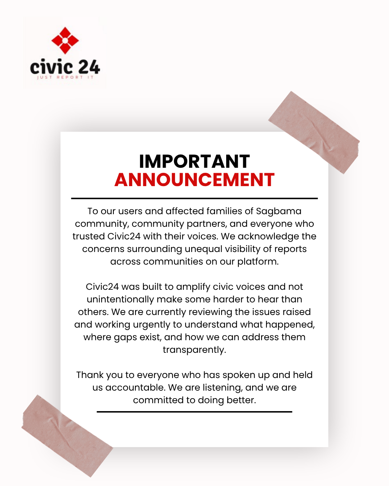
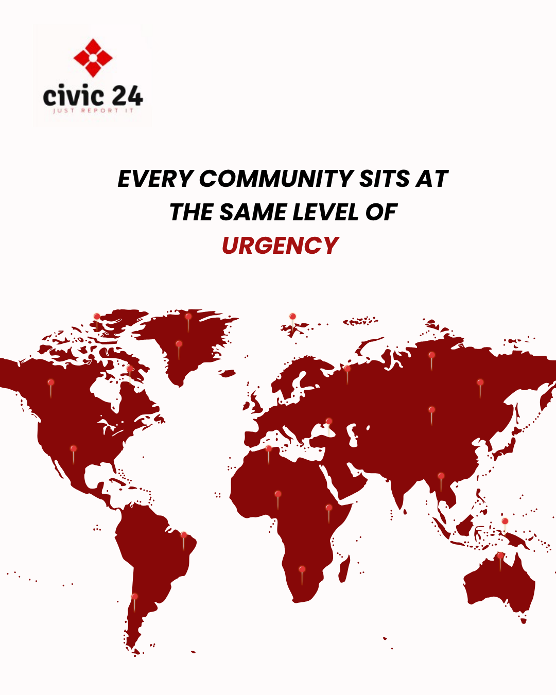
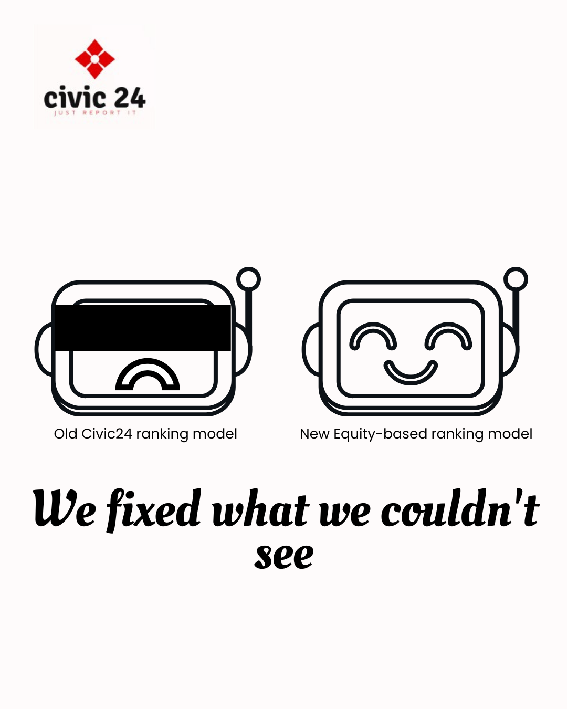

When trust breaks, communication becomes product design.
A reputation recovery strategy for a civic platform whose greatest product challenge became public confidence.



A platform built to amplify civic voices was accused of silencing them.
When evidence of algorithmic bias surfaced, the conversation shifted overnight. This was no longer about a software bug it was about fairness, public accountability, and whether Civic24 deserved to be trusted with civic participation. Before trust could be rebuilt, the company needed a response that treated transparency as infrastructure, not messaging.
Rebuilding trust in public.
The instinct in a crisis is often to explain. Civic24 needed to demonstrate.
Instead of relying on a single public apology, I designed a stakeholder-specific communication system that matched transparency to the audience receiving it.
- Users
- The Press
- Civil society partners
- Government stakeholders
They all needed the same truth but different messaging priorities, levels of transparency, and tone of communication.
The recovery strategy extended beyond the first statement into a 90-day framework of visible actions, structured updates, and measurable accountability. The objective wasn't to earn the right to be trusted again.
Every Voice, Equal
A reputation rebuilt in five moves.
Understand the harm before explaining the technology.
Accept responsibility before defending intent.
Give every stakeholder clarity without diluting accountability.
Replace promises with visible, measurable actions.
Turn transparency into an ongoing operating principle rather than a one-time campaign.
The Outcome.
A structured crisis communication system designed to stabilize trust, align messaging across audiences, and guide perception recovery over time.
In civic systems, trust does not break in one moment—and it cannot be repaired in one either. It is rebuilt through controlled, consistent communication across every stakeholder touchpoint.
End Credits
A Civic24 Trust Recovery Strategy · 2026Roles I held
- Brand strategyLead
- Crisis CommunicationLead
- Stakeholder CommunicationLead
- Messaging Architecture & Campaign DesignLead
Scope
- StakeholdersUsers · Media · NGOs · Government
- Timeline24-Hour Response & 90-Day Recovery
- CampaignEvery Voice, Equal
- FocusTrust Recovery · Narrative Stabilization · Public Accountability
- Core DeliverableA multi-channel trust recovery architecture